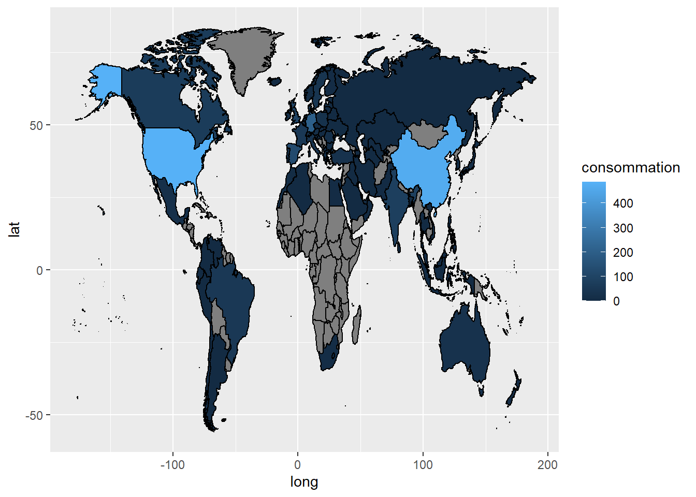
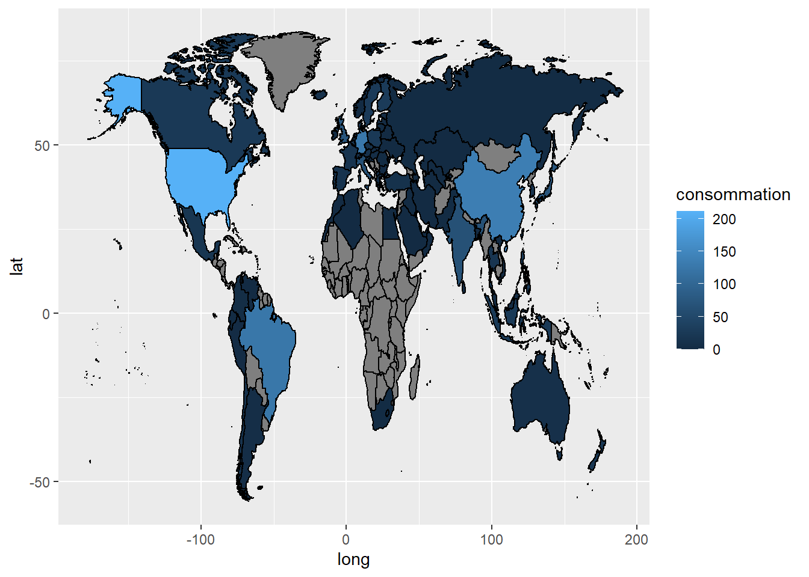
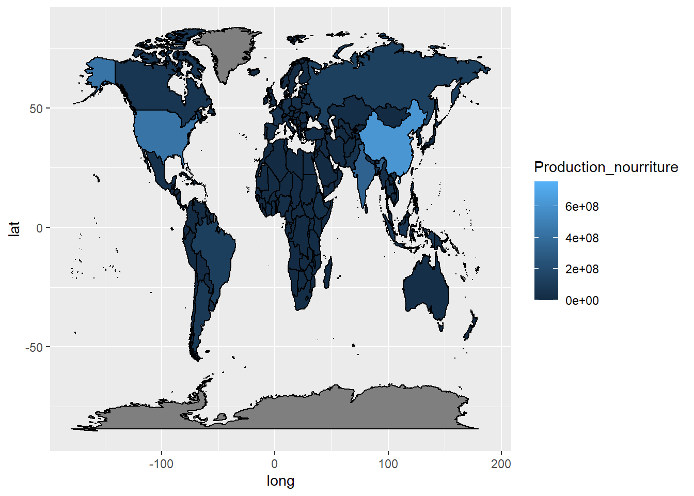

Chapter 4 Energie par sources 2
4.0.1 Distribution de l’énergie d’origine nuclear par pays en 2015
#source = nuclear
ggplot(energy_carte |>
filter(annee==2015) |>
filter(sources_energy =="nuclear"))+
aes(long,lat,group=group)+
geom_polygon(aes(fill=consommation),colour="black")
4.0.2 Distribution de l’énergie d’origine oil par pays en 2015
#source = oil
ggplot(energy_carte |>
filter(annee==2015) |>
filter(sources_energy =="oil"))+
aes(long,lat,group=group)+
geom_polygon(aes(fill=consommation),colour="black")
4.0.3 Distribution de l’énergie de source solar par pays en 2015
#source = solar
ggplot(energy_carte |>
filter(annee==2015) |>
filter(sources_energy =="solar"))+
aes(long,lat,group=group)+
geom_polygon(aes(fill=consommation),colour="black")
4.0.4 Distribution de l’énergie de source wind par pays en 2015
#source = wind
ggplot(energy_carte |>
filter(annee==2015) |>
filter(sources_energy =="wind"))+
aes(long,lat,group=group)+
geom_polygon(aes(fill=consommation),colour="black")
4.0.5 Distribution de l’énergie de source other_renewable_consumption par pays en 2015
#source = other_renewable_consumption
ggplot(energy_carte |>
filter(annee==2015) |>
filter(sources_energy =="other_renewable_consumption"))+
aes(long,lat,group=group)+
geom_polygon(aes(fill=consommation),colour="black")
4.1 NOURRITURE
#Partie food
food<-read_delim("Production_Crops_Livestock_E_All_Data.csv",
locale=locale(encoding="ISO-8859-1")) |>
select(-ends_with("F")) |>
pivot_longer(cols=Y1961:Y2020,
names_to="annee",
values_to="Production_nourriture") |>
mutate(annee=parse_number(annee)) |>
filter(annee ==2020)## Rows: 77523 Columns: 127
## ── Column specification ────────────────────────────────────────────────────────
## Delimiter: ","
## chr (64): Area, Item, Element, Unit, Y1961F, Y1962F, Y1963F, Y1964F, Y1965F,...
## dbl (63): Area Code, Item Code, Element Code, Y1961, Y1962, Y1963, Y1964, Y1...
##
## ℹ Use `spec()` to retrieve the full column specification for this data.
## ℹ Specify the column types or set `show_col_types = FALSE` to quiet this message.food_country <-food |>
filter(Element=="Production") |>
filter(str_detect(Item,"Total")|str_detect(Item,"Primary")) |>
rename(country=Area) |>
rename(Area_code="Area Code") |>
mutate(Area_code=(as.factor(Area_code))) |>
mutate(Area_code=countrycode(country, origin = "country.name", destination = "iso3c")) |>
drop_na(Area_code) |>
mutate(country=countrycode(Area_code, origin = "iso3c", destination = "country.name")) ## Warning in countrycode_convert(sourcevar = sourcevar, origin = origin, destination = dest, : Some values were not matched unambiguously: Africa, Americas, Asia, Australia and New Zealand, Belgium-Luxembourg, Caribbean, Central America, Central Asia, Czechoslovakia, Eastern Africa, Eastern Asia, Eastern Europe, Europe, European Union (27), Land Locked Developing Countries, Least Developed Countries, Low Income Food Deficit Countries, Melanesia, Micronesia, Middle Africa, Net Food Importing Developing Countries, Northern Africa, Northern America, Northern Europe, Oceania, Polynesia, Serbia and Montenegro, Small Island Developing States, South-eastern Asia, South America, Southern Africa, Southern Asia, Southern Europe, Western Africa, Western Asia, Western Europe, World, Yugoslav SFR## Warning in countrycode_convert(sourcevar = sourcevar, origin = origin, destination = dest, : Some strings were matched more than once, and therefore set to <NA> in the result: Australia and New Zealand,AUS,NZL#fusionner les données lat/long avec les données gapminder
food_carte <- world_map |>
mutate(group=factor(group),
region=factor(region)) |>
full_join(food_country,by="country")
# carte choroplethe
ggplot(food_carte)+
aes(long,lat,group=group)+
geom_polygon(aes(fill=Production_nourriture),colour="black")